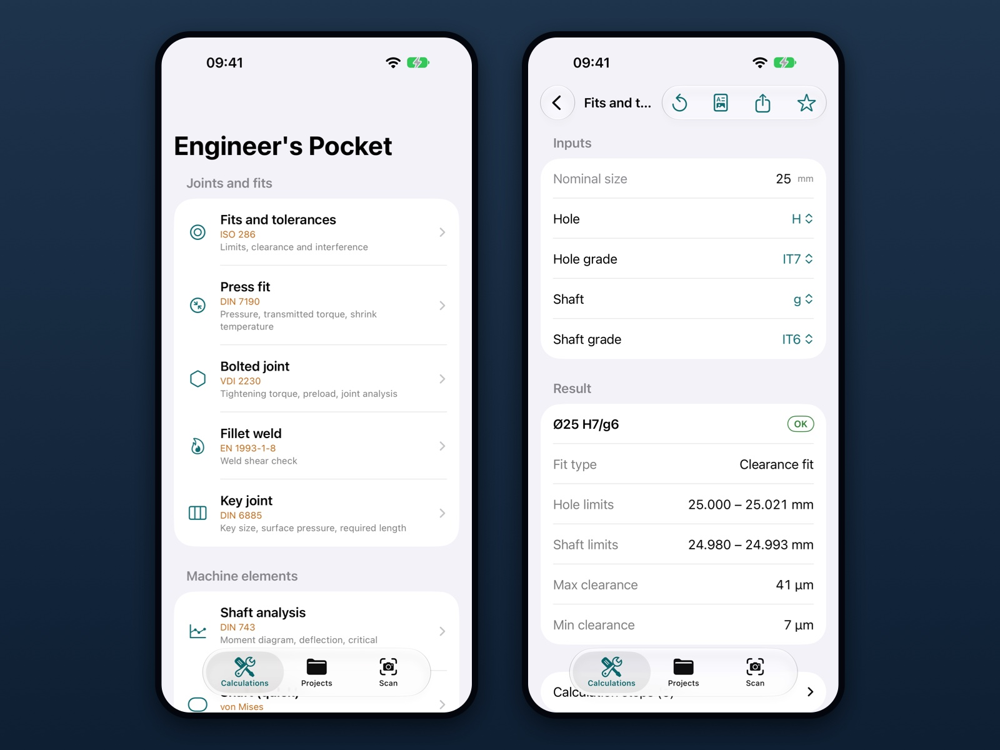
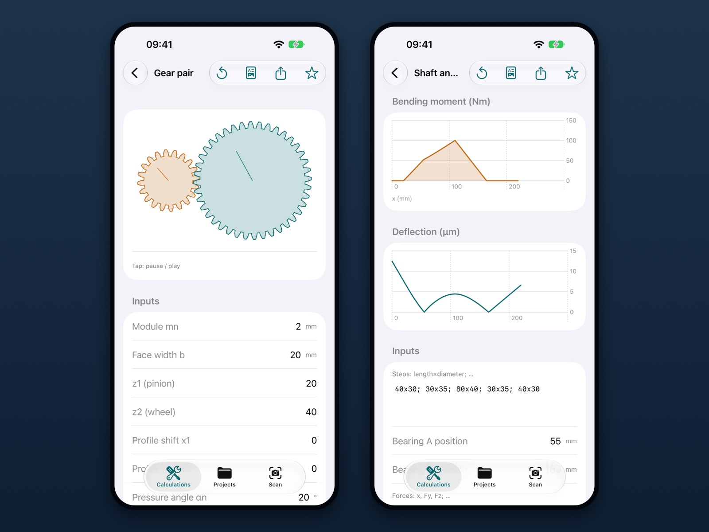
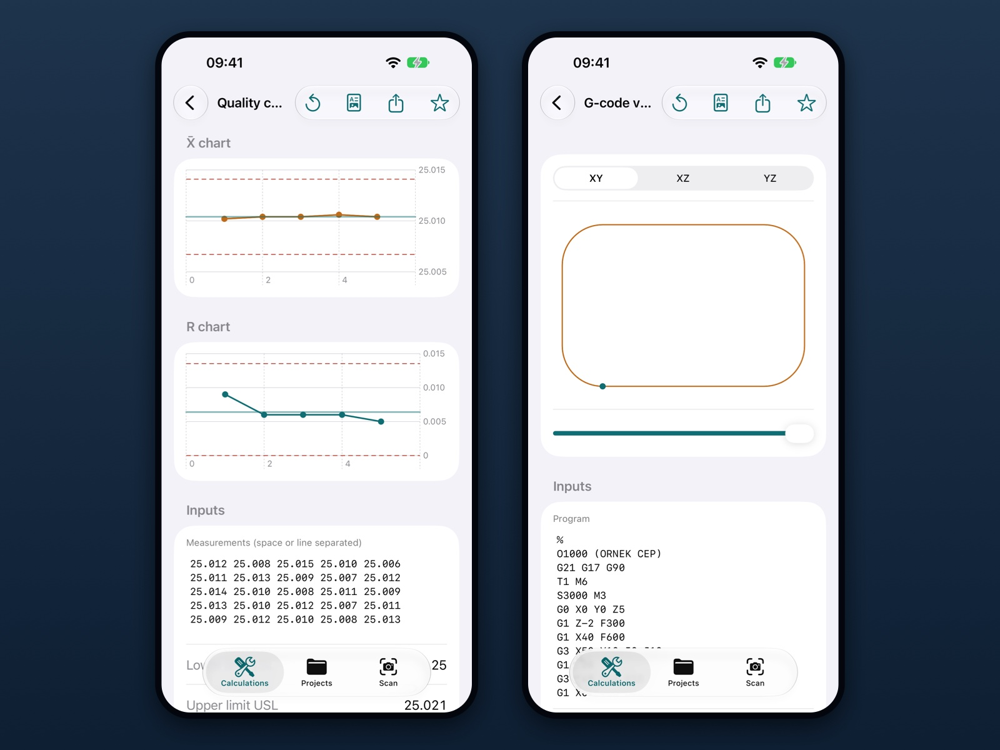

Mühendis Cebi
An Android and iOS toolkit for mechanical design and the shop floor. Fits, press fits, bolts, gears, shafts and process capability are calculated to the relevant standards, every step is shown, and the results go into a single PDF report.
Independent product · Zeytin Studio



The problem
Design and production engineers repeat the same checks every day: the limits of an H7/g6 fit, the tightening torque of an M12 bolt, whether a key can carry the torque, whether a process is capable. The usual tools are printed tables, spreadsheets nobody has verified and heavy desktop software. A value taken from the wrong table row or rounded to the wrong decimal goes straight onto a drawing, and nothing records how the number was reached.
What it does
Mühendis Cebi puts these calculations in one app, works offline and shows its work. Each result comes with the formulas, intermediate values and warnings when an input leaves the range the standard covers. Calculations can be saved into a project and exported as one PDF calculation report for a machine.
Calculations
- Joints and fits: ISO 286 fits, DIN 7190 press fits, VDI 2230 bolted joints, EN 1993-1-8 fillet welds, DIN 6885 keys
- Machine elements: DIN 743 shaft analysis, ISO 281 bearing life, ISO 21771 / ISO 6336 gears, EN 13906 springs
- Shop floor: cutting data, G-code viewer, tool life, SPC (Cp, Cpk, control charts), quotes, checklists
- References: threads, steel profiles, materials, unit converter
Tolerance scanner
Pointing the camera at a drawing reads tolerance callouts such as “Ø25 H7/g6” and opens the fit calculation with the values filled in, so limits are not typed by hand.
Precision & verification
The calculation engine was audited against the standards rather than tuned to look right:
- Limit sizes keep micron resolution: a js6 tolerance of ±4.5 µm is shown as 7.9955 – 8.0045 mm instead of being rounded away
- Gear strength follows the 2019 editions of ISO 6336-2 and ISO 6336-3; shaft strength uses size-dependent material values from EN 10083 / EN 10025 tables
- Invalid input is rejected instead of silently replaced by a default; results that would be physically meaningless are not shown
- 130+ unit tests, with table values checked against independent sources
Engineering approach
Calculations are defined once in a shared engine: inputs, validation, formulas and the report. Both apps render the same definitions, so a fix in the engine reaches Android, iOS and saved calculations at the same time. Saved calculations store inputs, not results, and are recalculated when opened.
Two languages, two number formats
The app runs in Turkish and English. Engineering text, warnings and reports are translated from one shared dictionary with numeric sentence templates. Numbers follow the language (1.234,5 or 1,234.5), and saved calculations remember which format they were written in.
Structure & technologies
- Shared calculation engine in Kotlin Multiplatform, used by both apps
- Android app in Jetpack Compose; iOS app in SwiftUI with Swift Charts, built with XcodeGen
- On-device text recognition for the tolerance scanner (ML Kit on Android, VisionKit on iOS)
- Native PDF generation for single calculations and project reports
- Bilingual Turkish / English interface with locale-aware number parsing
Status: In development; not yet published on App Store or Google Play. Results are intended for preliminary sizing and quick checks. The source code is private.